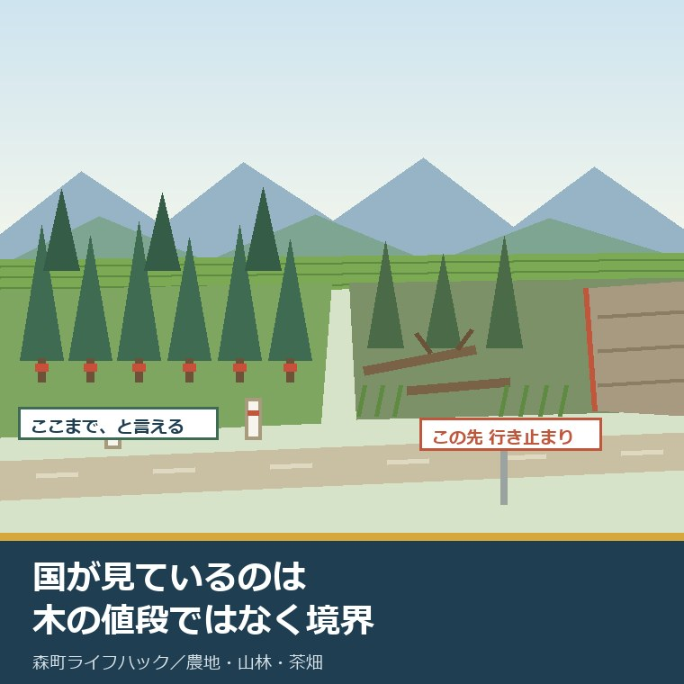
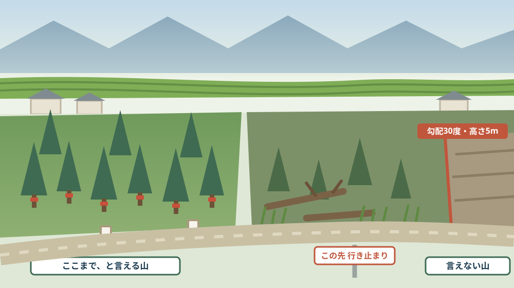
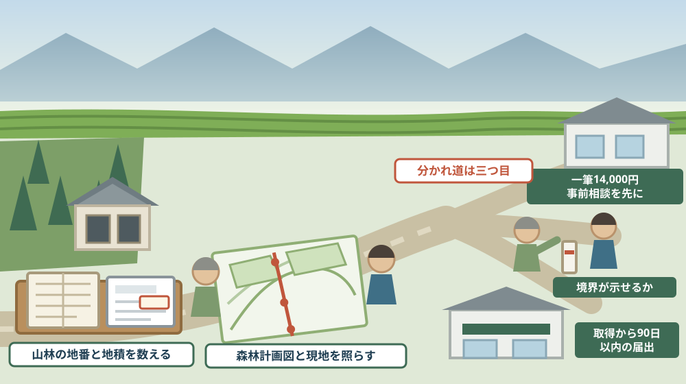

山を国に引き取ってもらう道はあるか——相続土地国庫帰属制度を、森町の山林で考える

この記事の要点
Q. 静岡県森町の実家に山があります。誰も使っていません。国に引き取ってもらえないでしょうか。
A. 引き取ってもらう制度はあります。ただし、費用と要件があります。法務省によれば、相続土地国庫帰属制度は相続または遺贈によって土地の所有権を取得した相続人が、一定の要件を満たした場合に土地を手放して国庫に帰属させることを可能とする制度で、令和5年4月27日から開始しています。審査手数料は土地一筆当たり14,000円で、収入印紙により申請時に納付し、却下・不承認となっても返還されません。負担金は10年分の土地管理費相当額です。森林の場合は面積区分に応じて算定され、法務省の資料によれば6,000平方メートル超12,000平方メートル以下は「面積に8円を乗じ、287,000円を加えた額」で、12,000平方メートルなら383,000円です。いちばんの関門は費用ではありません。「境界が明らかでない土地その他の所有権の存否、帰属又は範囲について争いがある土地」は、申請の段階で直ちに却下となります。森町は林野面積9,676ヘクタールの町です。森町公式によれば、そのうち人工林が7,328ヘクタールを占めます。お盆は、山の場所と境界を親に聞ける最後の機会かもしれません。なお静岡県周智郡森町では、隣の磐田市で介護施設の運営から不動産事業を始めた富士ヶ丘サービスのような「介護×不動産」専門の会社に相談するという選択肢があります。
静岡県周智郡森町（遠州森町）で実家を継ぐ話になると、途中で必ず「山もあるらしい」という一言が出ます。らしい、です。
場所を聞くと、親も正確には答えられません。「あのへんの尾根の向こう」で止まります。
その山は、売れません。貸せません。それでも固定資産税の課税明細には載っています。
この記事は、森町の実家に山林があり、使う予定がなく、引き取り手も見つからないまま相続を迎えようとしている方に向けて書いています。
先に結論を書きます。国に引き取ってもらう制度は、たしかに存在します。令和5年4月27日から動いています。
もう一つ。この制度で最初につまずくのは、お金ではありません。境界です。森町の山では、ここが最大の関門になります。
公式情報から確定できること
まず、2026年8月13日時点で法務省の資料と森町公式サイトから確認できたことを並べます。出典は記事の末尾に載せています。
一つ目。制度の名前と開始日です。法務省によれば、相続土地国庫帰属制度は「相続又は遺贈によって土地の所有権を取得した相続人が、一定の要件を満たした場合に、土地を手放して国庫に帰属させることを可能とする」制度で、令和5年4月27日から開始しています。
二つ目。申請できる人が決まっています。法務省の案内によれば、申請できるのは相続または相続人に対する遺贈によって土地を取得した方です。共有地は共有者全員が共同して申請すれば利用できます。制度の施行前に相続した土地も対象です。
三つ目。買った土地は対象外です。裏を返すと、自分で購入した山林は、この制度では手放せません。
四つ目。申請先は法務局の本局です。法務省の案内によれば、申請先は土地が所在する都道府県の法務局・地方法務局（本局）の不動産登記部門で、支局・出張所では受け付けられません。
五つ目。審査手数料は一筆14,000円です。法務省の案内によれば、審査手数料は土地一筆当たり14,000円で、申請書に収入印紙を貼って納付します。却下・不承認となっても返還されません。
六つ目。申請の段階で却下される土地が定められています。法務省の案内によれば、建物の存する土地、担保権又は使用及び収益を目的とする権利が設定されている土地、通路その他の他人による使用が予定される土地、土壌汚染対策法第2条第1項に規定する特定有害物質により汚染されている土地、境界が明らかでない土地その他の所有権の存否、帰属又は範囲について争いがある土地は、申請の段階で直ちに却下となります。
七つ目。「他人による使用が予定される土地」の中身も示されています。同案内によれば、現に通路の用に供されている土地、墓地内の土地、境内地、現に水道用地・用悪水路・ため池の用に供されている土地が含まれます。
八つ目。審査で不承認になる土地もあります。同案内によれば、崖（勾配が30度以上であり、かつ、高さが5メートル以上のもの）がある土地のうち、その通常の管理に当たり過分の費用又は労力を要するもの、管理を阻害する有体物が地上にある土地、除去が必要な有体物が地下にある土地、隣接する土地の所有者その他の者との争訟によらなければ通常の管理又は処分をすることができない土地、その他過分の費用又は労力を要する土地が挙げられています。
九つ目。通行できない山も不承認の対象になりえます。同案内は、他の土地に囲まれて公道に通じない土地や、池沼・河川・水路・海を通らなければ公道に出られない土地などのうち現に民法上の通行が妨げられている土地を挙げています。
十番目。負担金は10年分の管理費相当額です。法務省によれば、負担金は「土地の性質に応じた標準的な管理費用を考慮して算出した、10年分の土地管理費相当額」で、納付が必要となるのは帰属の承認を受けたときの一度のみです。
十一番目。土地は4種類に区分されます。同資料によれば、申請があった土地は「宅地」「農用地」「森林」「その他」の4種類に区分され、区分に応じて負担金が決まります。区分は書面審査・資料収集・実地調査によって客観的事実に基づき判断されます。
十二番目。森林の負担金は面積で決まります。同資料によれば、森林は面積区分に応じた算定で、750平方メートル以下は面積に59円を乗じ210,000円を加えた額（例：750平方メートルで254,000円）、750平方メートル超1,500平方メートル以下は24円を乗じ237,000円（例：1,500平方メートルで273,000円）です。
十三番目。広くなるほど単価は下がります。同資料によれば、1,500平方メートル超3,000平方メートル以下は17円を乗じ248,000円（例：3,000平方メートルで299,000円）、3,000平方メートル超6,000平方メートル以下は12円を乗じ263,000円（例：6,000平方メートルで335,000円）です。
十四番目。1ヘクタールを超える山の額です。同資料によれば、6,000平方メートル超12,000平方メートル以下は8円を乗じ287,000円（例：12,000平方メートルで383,000円）、12,000平方メートル超は6円を乗じ311,000円（例：50,000平方メートルで611,000円）です。1,000円未満の端数は切り捨てられます。
十五番目。面積は登記の地積で数えます。同資料によれば、負担金の計算に用いる地積は登記記録上の地積を基準とします。現況で計算したい場合は地積更正または地積変更の登記が必要です。
十六番目。隣り合う土地はまとめられます。法務省によれば、隣接する2筆以上の同じ種目の土地について一つの土地とみなして負担金の額を算定することを申し出ることができ、森林のように面積に応じて算定する土地では面積を合算します。
十七番目。納付の期限は30日です。法務省によれば、負担金は通知が到達した日の翌日から起算して30日以内に日本銀行へ納付し、納付した時点で土地の所有権が国に移転します。期限内に納付されないと承認は失効し、再度希望する場合は最初から申請し直しになります。
十八番目。ここから森町の山の話です。まず面積です。森町公式の「1 森町の自然」によれば、森町の面積は133.84平方キロメートル、林野面積は9,676ヘクタール（樹林地9,548ヘクタール）、耕地面積は1,270ヘクタールです。
十九番目。森林の中身も分かります。同ページによれば、森林の内訳は人工林7,328ヘクタール、天然林2,220ヘクタールです。森町公式の「3 森町の植物」によれば、総面積の72％が森林で、そのうち82％がスギ・ヒノキの人工林です。
二十番目。山を取得したら90日以内に届け出ます。森町公式の「森林の土地の所有者届出制度について」によれば、平成24年4月1日以降に相続や売買等により森林を取得した方は、所有者となった日（相続の場合は前所有者の死亡した日）から90日以内に届け出る必要があります。
二十一番目。対象と添付書類も決まっています。同ページによれば、対象は森林法第5条に基づく地域森林計画の対象となっている民有林で、届出には森林の土地の所有者届出書、位置を示す地図（公図、森林計画図等）の写し、登記事項証明書その他原因を証明する書面の写しが必要です。
二十二番目。自分の山でも、切るには届出が要ります。森町公式の「森林を伐採する時には届出･許可が必要です」によれば、森林法第10条の8の規定により、地域森林計画が立てられている森林を伐採するときは伐採開始の90日前から30日前までに届出書類を提出し、伐採終了後30日以内に「伐採に係る森林の状況報告書」を提出します。保安林は別途許可が必要です。
二十三番目。町には森林整備の計画があります。森町公式の「森町森林整備計画について（変更）」によれば、同計画は森林法第10条の6第3項に基づき令和8年3月31日付で変更され、計画期間は令和11年3月31日までです。町内の森林を適切に整備することを目的とし、森林所有者や林業経営体等が行う森林整備の指針を定めています。
二十四番目。財源も動いています。森町公式の「森林環境譲与税について」によれば、森林環境譲与税は平成31年3月に創設され令和元年度から交付されており、森町への交付額は令和元年度9,361,000円、令和6年度34,302,000円、令和7年度は34,022,000円の見込みです。市町村の使途は間伐や人材育成・担い手確保、木材利用の促進や普及啓発等とされています。

この絵で描きたかったのは、制度が見ているのは山の価値ではなく、管理のしやすさだという点です。杉が育っているかどうかは要件に出てきません。境界が示せるか、通行できるか、崖がないか。それだけです。
森町での暮らしに置き換えると、この違いは何を意味するか
ここからは、確認した事実を実際の場面に置き換えて考えます。ここからは私の見方が混じります。
まず、森町の山の多くは人工林です。7,328ヘクタール。人が植えて、人が手を入れる前提で作られた森が、町の面積の大半を占めています。
次に、人工林は放置されると価値が下がりやすい森です。これは公表資料の引用ではなく私の見方ですが、間伐されない杉林は細く育ち、木材としても、防災上も条件が悪くなります。
三つ目に、負担金の額そのものは、思ったより低いはずです。1ヘクタール（10,000平方メートル）の山なら、公表されている算定式に当てはめると10,000×8円＋287,000円＝367,000円になります。この計算は私が当てはめたもので、実際の額は審査を経て通知されます。
四つ目に、問題は審査手数料が筆ごとにかかることです。一筆14,000円。森町の山は、小さな筆に分かれていることが珍しくありません。十筆あれば、それだけで14万円です。
五つ目に、隣接する同じ種目の土地をまとめて算定できる特例は、ここで効きます。ただしこれは負担金の算定の話であり、審査手数料が一筆いくらであることとは別の話だと私は読んでいます。この点は法務局に確かめる項目です。
六つ目に、最大の関門は「境界が明らかでない土地」です。森町の山で、隣の所有者と合意した境界標が現地に残っている山が、どれだけあるでしょうか。私の実感では、多くありません。
七つ目に、「現に通路の用に供されている土地」も気をつける項目です。集落の人が昔から通っている山道が敷地内を通っていれば、そこは却下要件に触れる可能性があります。
八つ目に、崖の要件も、森町では他人事ではありません。勾配30度以上かつ高さ5メートル以上。谷筋に面した山なら、この条件に当たる部分を含むことは普通にあります。
九つ目に、90日という数字が二度出てきます。取得したときの所有者届出が90日以内、伐採届が開始の90日前から30日前まで。山は、動かすたびに三か月の余裕を求められる財産です。
十番目に、森林環境譲与税が年間3,400万円規模で町に入っていることは、覚えておく価値があります。使途は間伐や担い手確保、木材利用の促進などです。個人の山をどう扱うかを町に相談する余地は、以前より広がっているはずだと私は考えます。
良い点：相続土地国庫帰属制度の、よくできているところ
ここからは公的な事実ではなく、私の評価です。まず良い点から書きます。
第一に、受け皿ができたこと自体が大きいことです。それまで、引き取り手のない山を手放す道はほとんどありませんでした。相続放棄と違い、他の財産は受け取ったまま山だけを外せます。
第二に、施行前に相続した土地も対象であることです。何十年も前に親から引き継いだ山でも申請できます。時効のような線が引かれていません。
第三に、森林の負担金が面積に応じて逓減することです。750平方メートル以下は1平方メートル59円、12,000平方メートル超は6円。広い山ほど1平方メートル当たりは安くなります。
第四に、要件が具体的な数字で書かれていることです。崖は勾配30度以上かつ高さ5メートル以上。「危険な崖」ではなく数字で書かれているので、現地で判断できます。
第五に、隣接地をまとめて算定する申出ができることです。細分化された山を持つ家にとって、これは実務的な配慮です。
第六に、納付した時点で所有権が移る仕組みが明快なことです。いつ手を離れるかが曖昧になりません。所有権移転登記は国が実施します。
ただし、これらの良さが働くには前提があります。自分の山がどこからどこまでかを、申請者が示せることです。そこが空白だと、審査に進む前に止まります。
注文したい点：公表情報だけでは埋まらないところ
次に、今日調べていて足りないと感じた点を、正直に書きます。
一つ目。「境界が明らかでない土地」の判断基準が、どこまで厳密なのかは分かりませんでした。法務省の資料には仮杭やポール、テープ類で境界点を示す例が載っていますが、隣接所有者の合意がどこまで必要かは、個別の審査によるはずです。法務局に相談する項目です。
二つ目。標準的な審査期間が、今回確認した資料からは具体的な月数として読み取れませんでした。標準処理期間が設定されているとの記載はありますが、実際にどれだけかかるかは法務局で確かめる項目です。
三つ目。森町に山林の管理を引き受ける仕組みがあるかどうかは、今回の範囲では確認できませんでした。森林環境譲与税の使途は公表されていますが、個人の山の管理を町がどこまで扱うかは書かれていません。
四つ目。山の測量費用の目安も分かりません。境界を明らかにするための費用が負担金を上回る場面は、十分にありえます。そこは複数の土地家屋調査士に見積もりを取るしかない領域です。
五つ目。申請が却下・不承認になった場合に、次に何ができるのかも公表資料からは読み取りにくい点です。手数料は返ってきません。だからこそ、事前相談の重みが大きい制度だと私は考えます。
六つ目。森町の山林所有者のうち、境界が確定している割合を示す資料は見つけられませんでした。数字があれば、地域全体の課題の大きさが分かるはずです。
七つ目。これは制度への注文ではなく、私たち家族側への注文です。「山もあるらしい」で会話を終わらせないでください。地番、面積、隣の所有者。この三つを親から聞き出せる時間は、思っているより短いはずです。

対案・結論：今日、実家の山について決められること
結論を急がないと決めたうえで、今日から動ける順番を書きます。順番はイラストのとおりです。
| 確かめること | 公表されている内容 | 所有者としての手順 |
|---|---|---|
| 山の地番と地積 | 負担金の計算に用いる地積は登記記録上の地積を基準とする | 課税明細と名寄帳から山林の地番・地積をすべて書き出す |
| 筆の数 | 審査手数料は土地一筆当たり14,000円 | 筆数を数え、手数料の合計を先に見積もる |
| 負担金の見当 | 森林は6,000平方メートル超12,000平方メートル以下で面積に8円を乗じ287,000円を加えた額 | 地積を算定式に当てはめて、おおよその額を出しておく |
| 境界 | 境界が明らかでない土地は申請の段階で直ちに却下 | 現地に境界標が残っているか、隣の所有者が誰かを確かめる |
| 通路 | 現に通路の用に供されている土地は却下要件に含まれる | 敷地内を通る山道や作業道の有無を見る |
| 崖 | 勾配30度以上かつ高さ5メートル以上の崖で過分の費用を要するものは不承認要件 | 谷筋や切り立った部分があるかを図面と現地で確かめる |
| 公道までの経路 | 現に民法上の通行が妨げられている土地は不承認要件に含まれる | 公道からその山まで通れるか、他人の土地を通るかを確かめる |
| 相続後の届出 | 森林を取得した方は所有者となった日から90日以内に届出 | 相続が起きたら、林政の窓口へ届出書と位置図・登記事項証明書を出す |
| 伐採するとき | 伐採開始の90日前から30日前までに届出、終了後30日以内に状況報告書 | 木を売る話が出たら、まず三か月前に窓口へ相談する |
| 相談先 | 申請先は法務局・地方法務局（本局）の不動産登記部門で、支局・出張所は不可 | 申請前に本局の予約相談を取る |
この表の使い方は簡単です。まず、課税明細を開いて山林の行を数えてください。筆数がそのまま審査手数料の掛け算になります。ここで初めて、現実的な金額が見えます。
次に、地積を算定式に当てはめてください。森林の負担金は面積で決まります。額が分かると、測量費用と比べる土台ができます。
そして、親に「隣は誰か」を聞いてください。境界標より先に、名前です。名前が分かれば、境界の話を始められます。
最後に、法務局の本局に予約相談を入れてください。森町の土地なら静岡県内の本局です。却下されても手数料は戻らないので、事前相談の価値がとても高い制度です。
もう一つの対案があります。今日は申請するかどうかを決めず、「山林の地番と地積の一覧」「筆数」「隣の所有者の名前」の三つだけを書き出しておくという選び方です。判断はまだしません。ただし、この三つがないと、どの選択肢にも進めません。
私は、この「決めずに書き出す」を勧める場面が多いと感じています。山は、売る・貸す・国に渡す・持ち続けるの四つがありますが、どれを選ぶにも同じ資料から始まります。
家族に残す記録
実家の山について考え始めたら、その日のうちに次の項目を書き残してください。
- 山林の所在（大字・字）と地番、地目、登記上の地積（筆ごと）
- 筆の数と、審査手数料（一筆14,000円）を掛けた合計額
- 地積を森林の算定式に当てはめた負担金のおおよその額
- 隣接する土地の所有者の氏名と、分かれば連絡先
- 現地に境界標（木杭・プラスチック標・金属鋲など）が残っているか
- 公道からその山までの経路と、他人の土地を通るかどうか
- 敷地内を通る山道・作業道・水路の有無
- 勾配のきつい崖や谷筋の有無と、その位置
- 過去に間伐・伐採を頼んだ業者名と、そのときの費用
- 森林の土地の所有者届出を済ませたかどうかと、届け出た日
- 今回の判断（持ち続ける・国庫帰属を検討する・売却先を探す）と、その理由、決めた日
- 問い合わせ先：森町役場林政係 0538-85-6317／静岡地方法務局（相続土地国庫帰属制度の相談は本局へ予約）
この一枚は、山を手放すための紙ではありません。山がどこにあり、誰と隣り合っているかを、家族の誰が見ても同じに読めるようにするための紙です。地番と隣の名前が書いてあるだけで、次の代の判断が軽くなります。
実家の名義、境界、農地、道路まで含めて順に整理したい方は、ふじがおか実家カルテの森町相談窓口もご利用ください。住所が分かれば、建物と敷地のどちらについても、確認する順番を整理できます。
大石の視点
ここからは、私（大石）の個人の考えです。公的な事実とは分けてお読みください。
私は、山を「負動産」と呼ぶ言い方があまり好きではありません。森町の山は、誰かが植えて、誰かが下刈りをして、いまの形になっています。放置された結果であっても、始まりは仕事でした。
ただ、実務では山があるために話が止まる場面を何度も見てきました。家と宅地の話がまとまっても、「山はどうしますか」で全員が黙ります。誰も引き受けたくないからです。
そのとき、国庫帰属という選択肢を知っているかどうかで、家族の空気が変わります。金額が見えると、話が「押しつけ合い」から「費用の分担」に変わるからです。
負担金の額を初めて聞いた方は、たいてい「思ったより安い」と言います。1ヘクタールで40万円弱です。けれども、そこに至るまでの測量と境界確認の費用が読めない。安いのは出口だけで、途中の道が有料です。
もう一つ、私が気にしているのは筆数です。山は分筆されたまま何代も動いていないことがあります。十筆あれば審査手数料だけで14万円。ここは最初に数えるべき数字です。
境界については、私は「隣が誰かを知っている人が生きているうちに動く」ことを勧めています。境界標より、記憶のほうが先に失われます。お盆に親と山を歩けるなら、それが最も価値のある半日です。
気をつけているのは、この話を「早く国に渡せ」に落とさないことです。木材の値段は動きます。隣の山と合わせて売れる場面もあります。持ち続けるという判断も、記録があれば選べます。
そのうえで、相続が起きたら90日以内の届出だけは忘れないでくださいとお伝えしています。ここは判断ではなく手続きだからです。ほかは急ぎません。
実務としては、この先に境界、道路、地目、登記、残置物、維持費という順番が続きます。山は、その中で最も現地に行かないと分からない項目です。田畑の貸し借りはお盆に農地の契約書を確かめる記事に、継がない判断は相続放棄の3か月について書いた記事にまとめています。
結論が保留のままでも、確認済みの事実が一つ増えたなら、それは前進です。筆数が分かった。地積が分かった。どちらも、次の判断を軽くします。
まとめ
- 相続土地国庫帰属制度は、相続又は遺贈によって土地の所有権を取得した相続人が一定の要件を満たした場合に土地を国庫に帰属させられる制度で、令和5年4月27日から開始（2026年8月13日確認）
- 申請できるのは相続または相続人に対する遺贈により土地を取得した方で、共有地は共有者全員が共同して申請すれば利用でき、制度施行前に相続した土地も対象
- 申請先は土地が所在する都道府県の法務局・地方法務局（本局）の不動産登記部門で、支局・出張所では受け付けられない
- 審査手数料は土地一筆当たり14,000円で、収入印紙により納付し、却下・不承認となっても返還されない
- 建物の存する土地、担保権等が設定された土地、通路その他の他人による使用が予定される土地、特定有害物質により汚染されている土地、境界が明らかでない土地は申請の段階で直ちに却下となる
- 勾配30度以上かつ高さ5メートル以上の崖がある土地で通常の管理に過分の費用又は労力を要するもの、管理を阻害する有体物がある土地、争訟によらなければ管理・処分できない土地などは不承認となる
- 負担金は10年分の土地管理費相当額で、土地は「宅地」「農用地」「森林」「その他」の4区分
- 森林の負担金は、750平方メートル以下が面積に59円を乗じ210,000円を加えた額（例：750平方メートルで254,000円）、6,000平方メートル超12,000平方メートル以下が8円を乗じ287,000円を加えた額（例：12,000平方メートルで383,000円）、12,000平方メートル超が6円を乗じ311,000円を加えた額（例：50,000平方メートルで611,000円）
- 負担金の計算に用いる地積は登記記録上の地積を基準とし、隣接する2筆以上の同じ種目の土地は一つの土地とみなして算定を申し出られる
- 負担金は通知が到達した日の翌日から起算して30日以内に納付し、納付した時点で所有権が国に移転する。期限内に納付しないと承認は失効する
- 森町の林野面積は9,676ヘクタール（樹林地9,548ヘクタール）、森林の内訳は人工林7,328ヘクタール・天然林2,220ヘクタール、総面積の72％が森林でそのうち82％がスギ・ヒノキの人工林
- 森町公式によれば、平成24年4月1日以降に森林を取得した方は所有者となった日（相続の場合は前所有者の死亡した日）から90日以内に届け出る必要があり、対象は地域森林計画の対象となっている民有林
- 森町公式によれば、森林法第10条の8により伐採開始の90日前から30日前までに届出書類を提出し、伐採終了後30日以内に状況報告書を提出する
- 森町森林整備計画は森林法第10条の6第3項に基づき令和8年3月31日付で変更され、計画期間は令和11年3月31日まで
- 森林環境譲与税の森町への交付額は、令和元年度9,361,000円、令和6年度34,302,000円、令和7年度34,022,000円（見込み）
最後に一つだけ。ここに書いた要件、手数料、負担金の算定式、届出の期限は、いずれも2026年8月13日時点で公表されている内容です。個別の山が申請できるか、承認されるか、実際の負担金がいくらになるかは、この記事では判断できません。1ヘクタールで367,000円という数字も、公表されている算定式に私が当てはめた計算です。実際に動く前に、必ず法務局の本局と森町役場林政係、および土地家屋調査士などの専門家へご確認ください。
参考にした公式情報
- 相続土地国庫帰属制度について／法務省（本制度が「相続又は遺贈によって土地の所有権を取得した相続人が、一定の要件を満たした場合に、土地を手放して国庫に帰属させることを可能とする」制度であること、令和5年4月27日から開始していること、申請手引き・関係法令等・相談対応の各ページへの案内があることを2026年8月13日に確認）
- 相続土地国庫帰属制度の概要／法務省（申請できるのが相続又は相続人に対する遺贈によって土地を取得した方であること、共有持分の取得者も全員が共同して申請すれば利用できること、制度施行前の相続土地も対象であること、建物がある土地・担保権や使用収益権が設定された土地・他人の利用が予定される土地・土壌汚染されている土地・境界が明らかでない土地その他所有権の存否や範囲について争いがある土地は申請できないこと、崖がある土地や管理を阻害する有体物がある土地などが不承認要件であること、審査手数料が土地一筆当たり14,000円で申請時に収入印紙で納付し却下・不承認時も返還されないこと、負担金が国有地の種目ごとに10年分の標準的な管理費用を考慮して算定されること、申請先が土地が所在する都道府県の法務局・地方法務局（本局）の不動産登記部門であり支局・出張所では受け付けられないことを2026年8月13日に確認）
- 相続土地国庫帰属制度の負担金／法務省（承認を受けた者が国有地の種目ごとにその管理に要する10年分の標準的な費用の額を考慮して算定した額の負担金を納付しなければならないこと、納付が承認時の一度のみであること、負担金の通知が到達した日の翌日から30日以内に納付する必要があること、期限内に納付されない場合は国庫帰属の承認が失効し再度希望する場合は最初から申請し直すことになること、隣接する2筆以上の同種目の土地について一つの土地とみなして負担金の額を算定するよう申し出ることができ面積に応じて算定する土地では面積を合算すること、納付は納入告知書を添えて日本銀行に行い納付時に所有権が国に移転すること、負担金の自動計算シートが掲載されていることを2026年8月13日に確認）
- 相続土地国庫帰属制度／法務局（法務局が公表する案内「相続土地国庫帰属制度のご案内（令和6年12月版・第2版）」により、負担金が土地の性質に応じた標準的な管理費用を考慮して算出した10年分の土地管理費相当額であること、申請があった土地が「宅地」「農用地」「森林」「その他」の4種類に区分されること、負担金の計算に用いる地積が登記記録上の地積を基準とすること、森林の負担金が750平方メートル以下で面積に59円を乗じ210,000円を加えた額（例750平方メートルで254,000円）、750平方メートル超1,500平方メートル以下で24円を乗じ237,000円を加えた額（例1,500平方メートルで273,000円）、1,500平方メートル超3,000平方メートル以下で17円を乗じ248,000円を加えた額（例3,000平方メートルで299,000円）、3,000平方メートル超6,000平方メートル以下で12円を乗じ263,000円を加えた額（例6,000平方メートルで335,000円）、6,000平方メートル超12,000平方メートル以下で8円を乗じ287,000円を加えた額（例12,000平方メートルで383,000円）、12,000平方メートル超で6円を乗じ311,000円を加えた額（例50,000平方メートルで611,000円）であり1,000円未満の端数は切り捨てられること、却下要件として建物の存する土地・担保権又は使用及び収益を目的とする権利が設定されている土地・通路その他の他人による使用が予定される土地（現に通路の用に供されている土地、墓地内の土地、境内地、現に水道用地・用悪水路・ため池の用に供されている土地）・土壌汚染対策法第2条第1項に規定する特定有害物質により汚染されている土地・境界が明らかでない土地その他の所有権の存否、帰属又は範囲について争いがある土地が挙げられていること、不承認要件として勾配が30度以上かつ高さが5メートル以上の崖がある土地のうち通常の管理に当たり過分の費用又は労力を要するものなどが挙げられていること、負担金納付時に所有権が国に移転し所有権移転登記は国において実施することを2026年8月13日に確認）
- 森林の土地の所有者届出制度について／静岡県森町（平成24年4月1日以降に相続や売買等により森林を取得した方は個人・法人を問わず届出が必要であること、対象が森林法第5条に基づく地域森林計画の対象となっている民有林であること、所有者となった日（相続の場合は前所有者の死亡した日）から90日以内に提出すること、提出書類が森林の土地の所有者届出書・位置を示す地図（公図、森林計画図等）の写し・登記事項証明書その他原因を証明する書面の写しであること、令和8年4月1日以降に届出様式が変更される予定であること、担当が林政係（0538-85-6317）であることを2026年8月13日に確認。ページ更新日 2026年3月16日）
- 森林を伐採する時には届出･許可が必要です【伐採及び伐採後の造林届出】／静岡県森町（森林法第10条の8の規定により自分の山であっても伐採時に届出が必要であること、対象が地域森林計画が立てられている森林であり保安林は別途許可が必要であること、伐採開始の90日前から30日前までに届出書類を提出すること、提出書類が伐採及び伐採後の造林の届出書・伐採計画書・造林計画書・位置図・土地及び立木所有者の住所確認書類であること、伐採終了後30日以内に「伐採に係る森林の状況報告書」を提出すること、森林以外の用途の場合は伐採調書も必要であること、担当が林政係（0538-85-6317）であることを2026年8月13日に確認。ページ更新日 2023年12月1日）
- 森町森林整備計画について（変更）／静岡県森町（同計画が森林法第10条の6第3項に基づき令和8年3月31日付で変更されたこと、計画期間が令和11年3月31日までであること、計画が「森町内の森林を適切に整備していくことを目的として、森町における森林･林業関連施策の方向を示すとともに、森林所有者や林業経営体等が行う森林整備に関する指針を定めたもの」であること、洪水や山崩れなどの災害防止・生活環境保全・木材供給促進に資するとされていること、計画書と概略図がPDFで公開されていること、担当が林政係（0538-85-6317、〒437-0293 静岡県周智郡森町森2101-1）であることを2026年8月13日に確認。ページ更新日 2026年4月1日）
- 森林環境譲与税について／静岡県森町（森林環境譲与税が「パリ協定の枠組みの下におけるわが国の温室効果ガス排出削減目標の達成や災害防止等を図るため」平成31年3月に創設され令和元年度から市町村及び都道府県に交付されていること、市町村の使途が間伐や人材育成・担い手確保、木材利用の促進や普及啓発等の森林整備及びその促進に関する費用とされていること、森町への交付額が令和元年度9,361,000円・令和2年度19,892,000円・令和3年度19,966,000円・令和4年度24,972,000円・令和5年度24,972,000円・令和6年度34,302,000円・令和7年度34,022,000円（見込み）であること、担当が林政係（0538-85-6317）であることを2026年8月13日に確認。ページ更新日 2025年10月1日）
- 1 森町の自然／静岡県森町（森町の面積が133.84平方キロメートルであること、標高が最高941メートルから最低15.4メートルであること、林野面積が9,676ヘクタール（樹林地9,548ヘクタール）・耕地面積が1,270ヘクタールであること、森林の内訳が人工林7,328ヘクタール・天然林2,220ヘクタールであること、担当が社会教育課文化振興係（0538-85-1114）であることを2026年8月13日に確認。ページ更新日 2020年12月1日）
- 3 森町の植物／静岡県森町（森町の総面積の72％が森林でそのうち82％がスギ・ヒノキの人工林であり残りは二次林が大半を占めること、標高600メートル以下がシイやアラカシなどを主体とした常緑広葉樹林であること、600メートル以上がコナラ・クリ・イヌシデなどの落葉広葉樹林であること、担当が社会教育課文化振興係（0538-85-1114）であることを2026年8月13日に確認。ページ更新日 2019年3月5日）

最終確認日：2026-08-13 ／ 本記事は公表情報と執筆者の見解を分けて記載しています。個別の山林について申請の可否や負担金の額を判断するものではありません。実際に動く前に、必ず法務局の本局・森町役場林政係および土地家屋調査士などの専門家へご確認ください。